Cumplelolero · mañana, 5 oct de 2010
SWAIN16 AÑOS
El Gran General Noxiano
Jericho Swain · Noxus
En Arcane no salió él
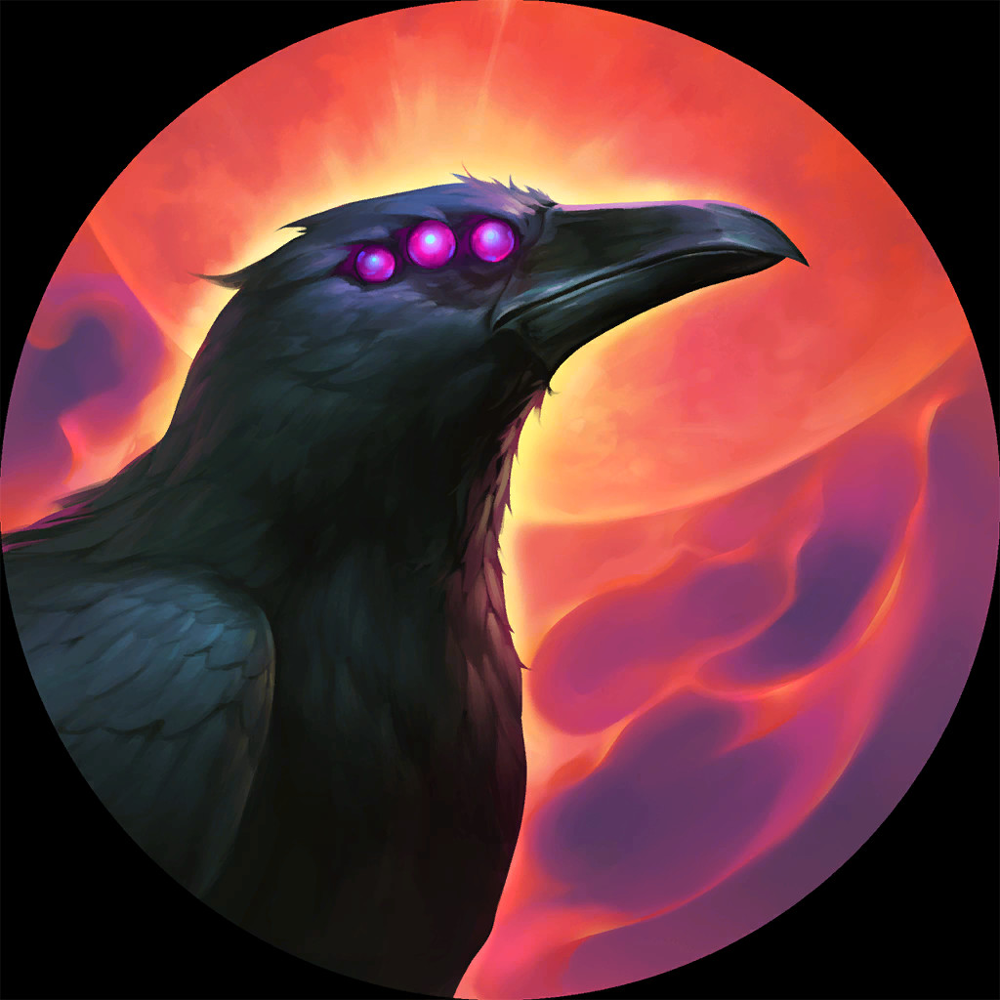
Salió su cuervo
con tres ojos
Al final van a entender por qué importa
Nació aristócrata
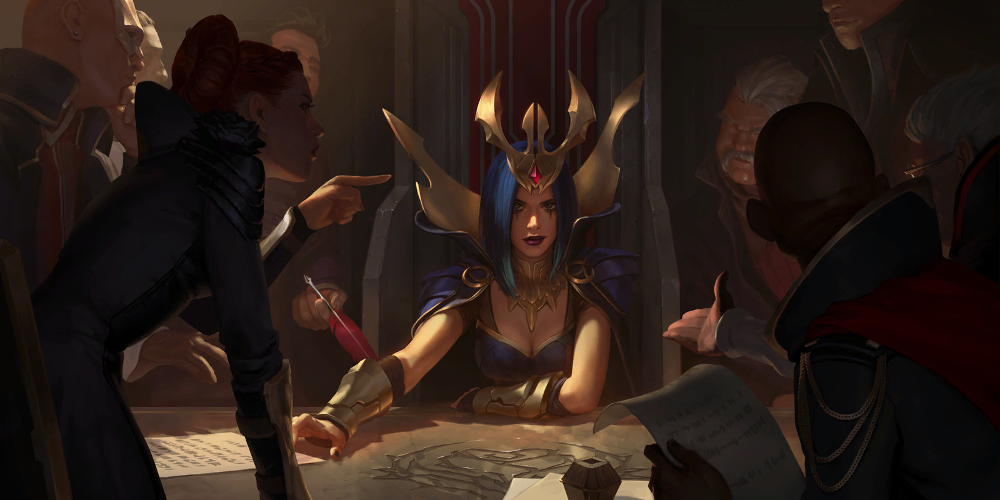
Conspiraban bajo
una rosa negra
Contra el emperador Boram Darkwill
Ejecutó él mismo
a los conspiradores
a los conspiradores
Entre ellos,
sus padres
sus padres
Su biografía, sin adornos
«Valoraba a Noxus más que
al linaje o la familia»
al linaje o la familia»
Agonizando, en el Placidium
Lo miró a los ojos
y vio
Una rosa negra
Una mujer pálida
Su emperador, marioneta
No había vencido a la camarilla.
Lo habían mandado a morir.
Lo habían mandado a morir.
Mató a
sus padres
para nada
sus padres
para nada
Lo corrieron por inválido
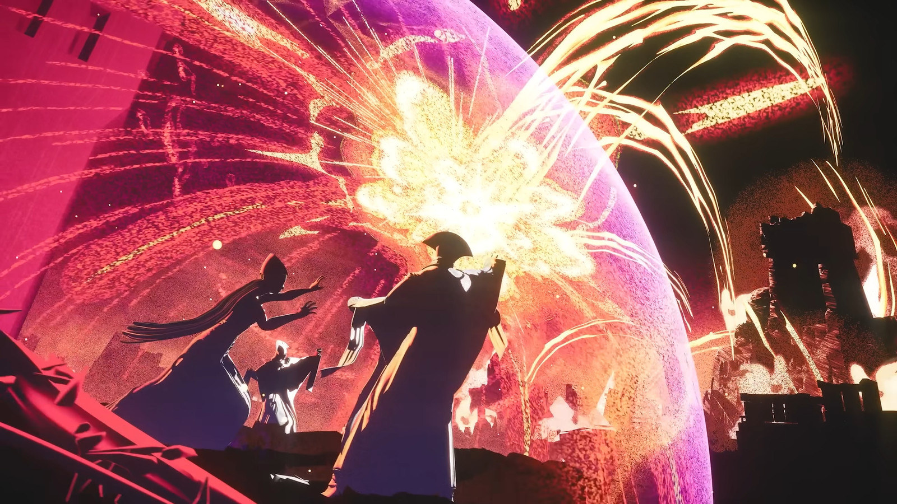
Fue a buscar
lo que había adentro
Textual de su biografía
«Descubrió algo que incluso ella desconocía: una manera de esgrimirla»
Años de preparación
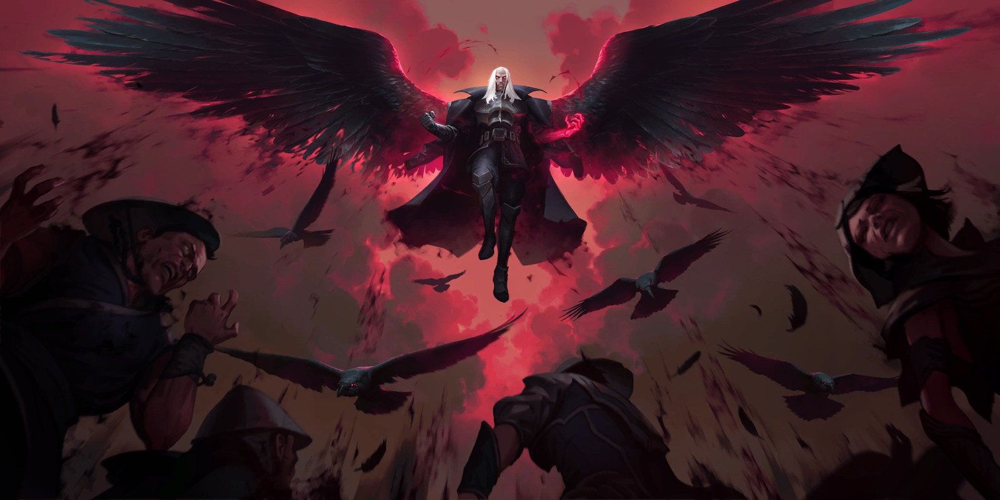
Tomó Noxus
en una sola noche
Y mató a Darkwill enfrente de todos sus seguidores
Lo que no hace ningún villano
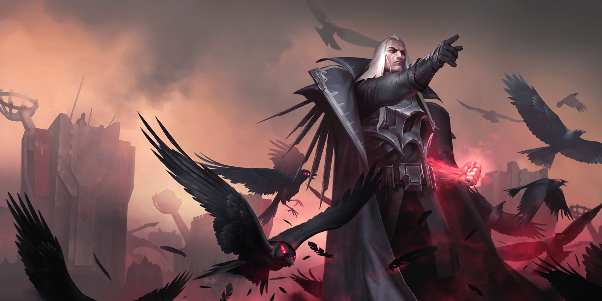
Nadie gobierna
sin oposición.
Incluido él.
Armó la Trifarix. Y a la Rosa Negra la dejó adentro.
El número uno del mundo
SWAINIAWS
Corea
16 788 987
puntos · maestría nivel 1 334
2 047
partidas esta temporada · 1 951 con Swain
5,5 al día, todos los días del año
Wachen el historial
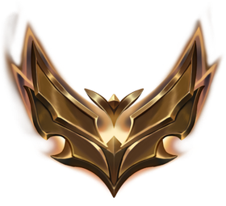
Oro 2
Oro 1
Oro 4
Oro 3
Oro 1
Cinco temporadas atorado en Oro
↑

Este año
Platino 1
por fin subió · 50 %
El primer otepé de la serie
que va para arriba
Once skins
Ocho a la venta
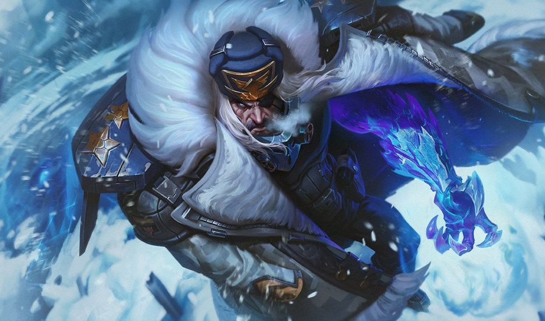
Frente Nórdico
salió con él · 2010
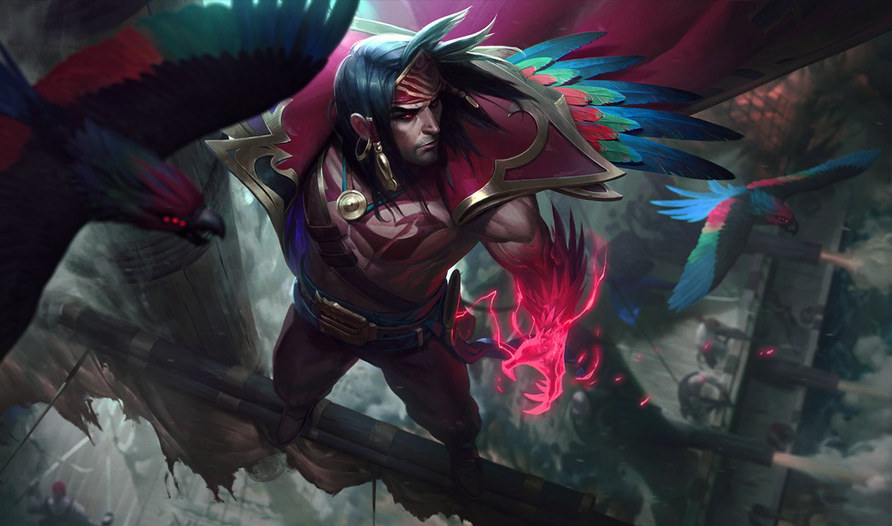
Aguasturbias
salió con él · 2010
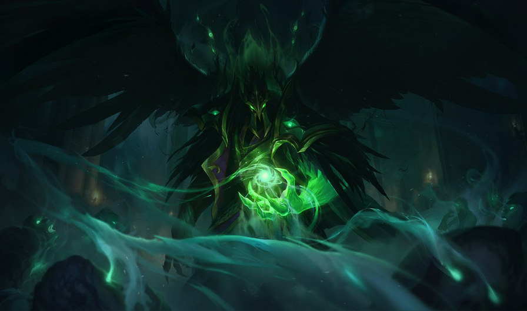
Tirano
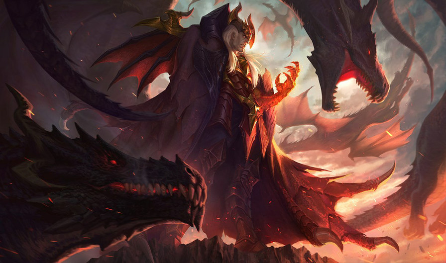
Amo de los Dragones
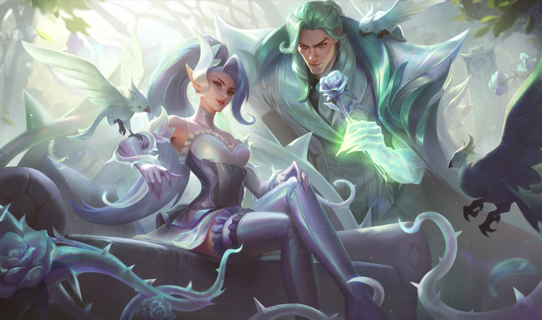
Rosa de Cristal
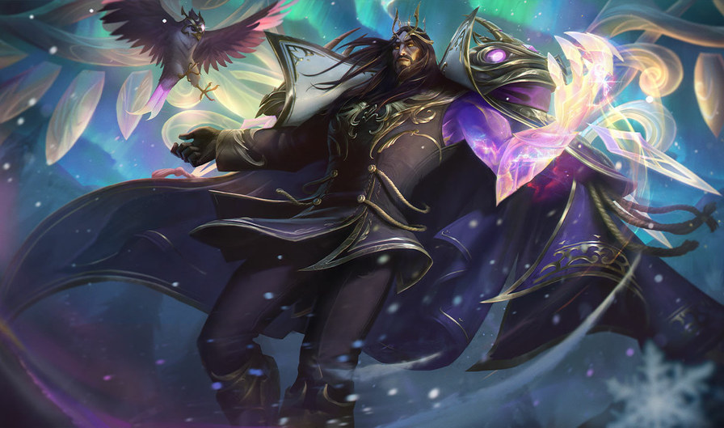
Favor del Invierno
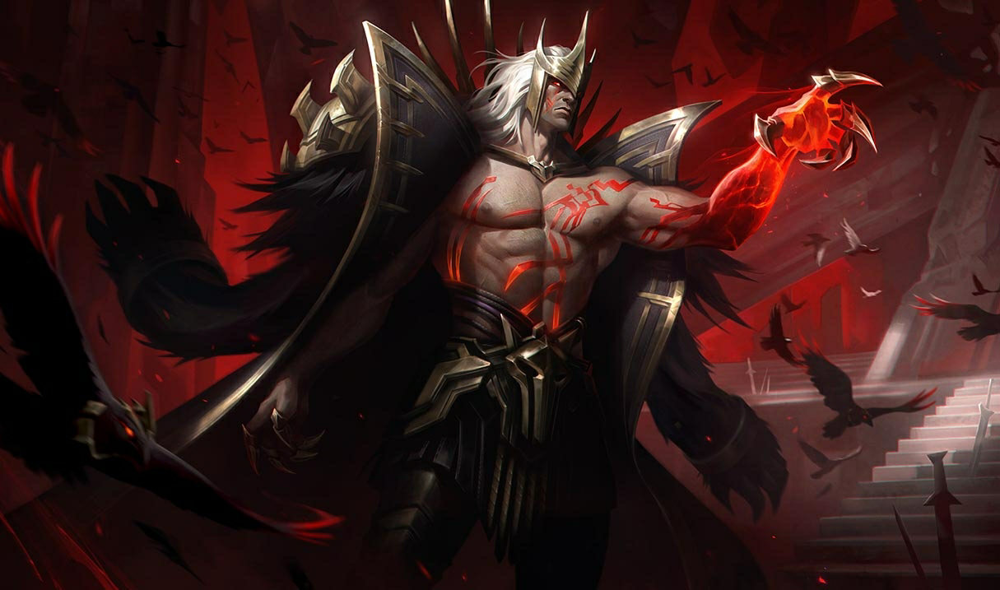
Elegido del Lobo
+ la más
nueva
nueva
El que ejecutó a sus padres
y derrocó a un emperador
y derrocó a un emperador
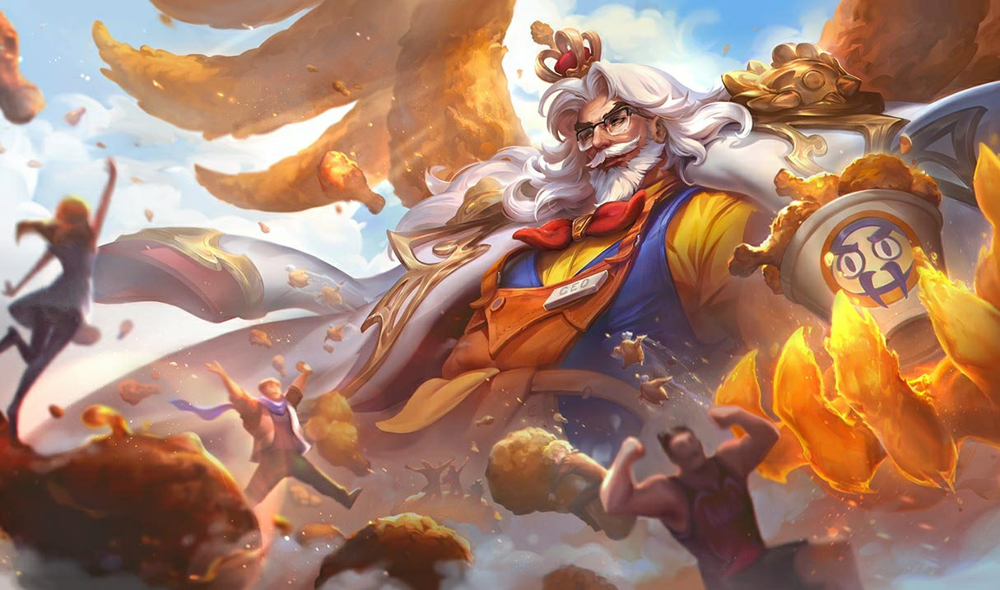
Tiene una skin que se llama
REY DEL
POLLO FRITO
POLLO FRITO
Dieciséis años del Gran General
Feliz cumpleaños,
Swain
GIGI EASY
Tírenme un follow o les voy a meter la cuarta. Chao.